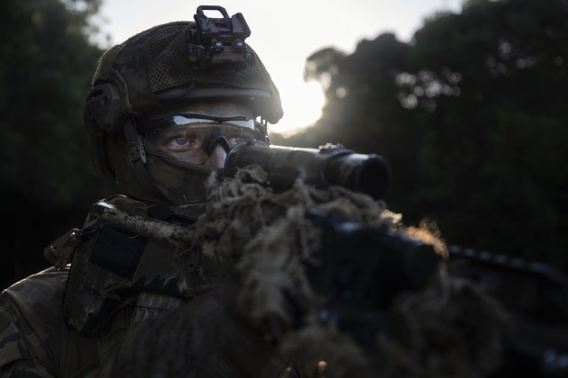

Reconhecimento especial
Reconhecimento especial é uma operação militar conduzida por Forças Especiais e Comandos cujo propósito é obter informações referentes às atividades e meios do inimigo ou coletar informações de caráter geográfico, meteorológico e eletrônico, referentes à área provável de operações. Este tipo de reconhecimento complementa o emprego de outros sistemas de reconhecimento, inteligência e sempre tem como objetivo informações de valor estratégico.
O reconhecimento especial inclui a aquisição de alvos de alto valor, atividades e controle de movimentações de tropas inimigas, a avaliação de área, e o controle de danos pré e após um ação direta.
Um reconhecimento especial pode ser conduzido independentemente ou em apoio às operações convencionais. Normalmente é uma operação que requer elevado sigilo e é executada por grupos de pequeno efetivo, que empregam técnicas de combate de caráter evasivo.
Reconhecimento especial é a designação dada às ações de reconhecimento e vigilância conduzidas por forças de operações especiais para obter ou verificar, através de observação ou de outros métodos de coleta, informações a respeito das capacidades, intenções e atividades de um potencial ou atual inimigo, ou para obter também dados seguros sobre as características físicas e meteorológicas de uma determinada área.
